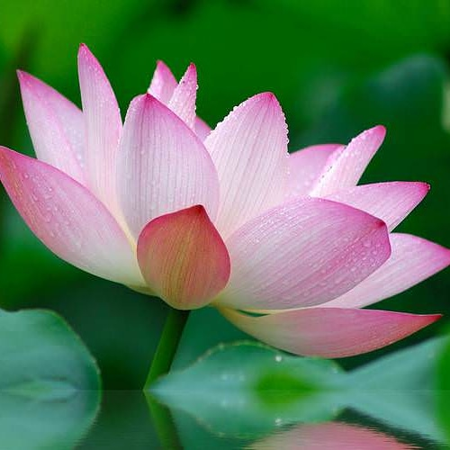
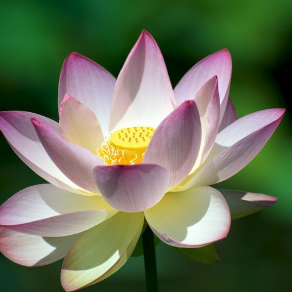
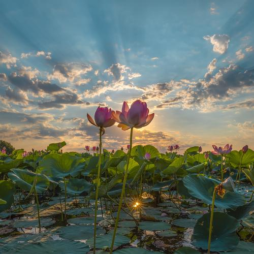
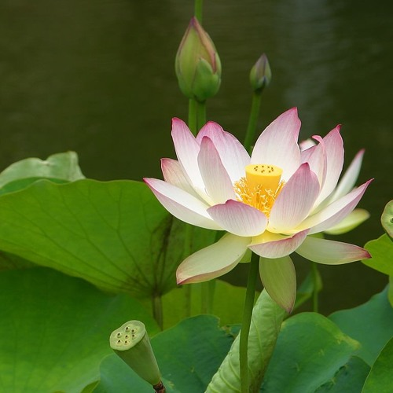
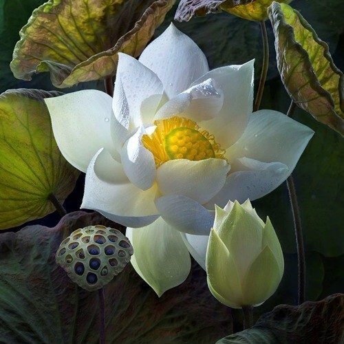
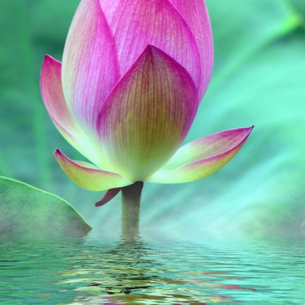

Этим цветком восхищаются, любуются, перед ним преклоняются: ведь лотос символ богов. В разных религиях он имеет своё значение и означает жизнь, возрождение, чистоту, забвение, мир, плодородие, а некоторые народы рассматривают его как взаимодействие мужского и женского начал.В реальности этот невероятной красоты цветок является многолетним растением, принадлежит к роду двудольных, является единственным представителем семейства лотосовых и бывает желтого или розового цвета (при этом интересно, что к лотосам также иногда относят белые, красные и голубые кувшинки).
  Растут эти удивительные растения только в воде – в дельтах рек, в илистых протоках, заводях, иногда их можно увидеть высоко в горах (например, в Индии этот цветок превосходно себя чувствует на высоте в полтора километров).Лотосы – растения теплолюбивые, требовательные и растут далеко не везде (из-за чего внесены в Красную книгу): желтый предпочитает водоёмы Южной и Центральной Америки, Ямайки, Гавайских островов, тогда как розовый нередко можно увидеть на территории Азии, в Японии, Индии, добрался до Австралии. Цветёт он и в России – в дельте Волги, на Дальнем Востоке, на Кубани, где на Таманском полуострове расположен невероятной красоты водяной сад: удивительная Долина Лотосов.
  Долина Лотосов полностью покрыта плавающими зелёными листьями. Украшают их нежнейшие розовые цветы, раскрывающиеся на рассвете и смыкающиеся после обеда в плотный бутон. Цветёт розовый лотос около четырёх-пяти дней, после чего лепестки опадают. Благодаря тому, что корневище растения постоянно растёт, на каждом его узле появляются корни, листья и один цветонос, благодаря чему Долина Лотосов цветёт до сентября месяца.
К лотосам многие относят кувшинки белого, красного цвета и даже голубой лотос. Красный лотос символ Индии (в книгах он символизирует не только первоначальную природу и чистоту сердца, но и является лотосом любви, сострадания, страсти, словом, в его значение заключены все свойства сердца). Считается, что настоящее живёт в лучах Красного Солнца, а над всем сущим царит Будда Шакьмуни, престолом которого выступает Красный лотос.А вот древние египтяне считали, что белый лотос символизирует сон и сладостное забвение, поскольку нильский белый лотос в отличие от своих сородичей раскрывался лишь ночью. Тогда как китайцы и японцы до сих пор едят засахаренные корешки этой кувшинки, считая, что белый лотос продлит их молодость и сохранит красоту как можно дольше.
Занесённый в Красную книгу цветок содержит не только наркологические, но и биологически активные вещества, белок, марганец, медь, масла, витамин С. А потому врачи рекомендуют использовать его настойки как тонизирующее, кардиотоническое, общеукрепляющее средства.Известно, что древние лекари использовали это растение даже как мочегонное и кровоостанавливающее средство, назначали при сильном истощении или недомогании для стимуляции иммунной системы человека – словом, при лечении болезней голубой лотос (как, впрочем, и другие виды растения), имел немаловажное значение.